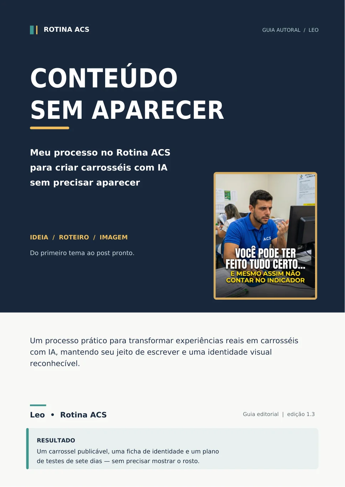
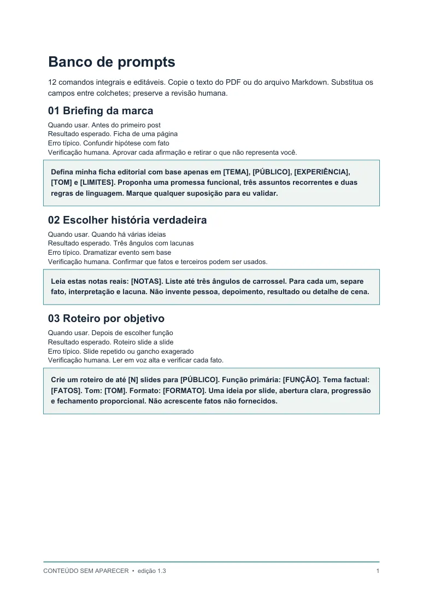
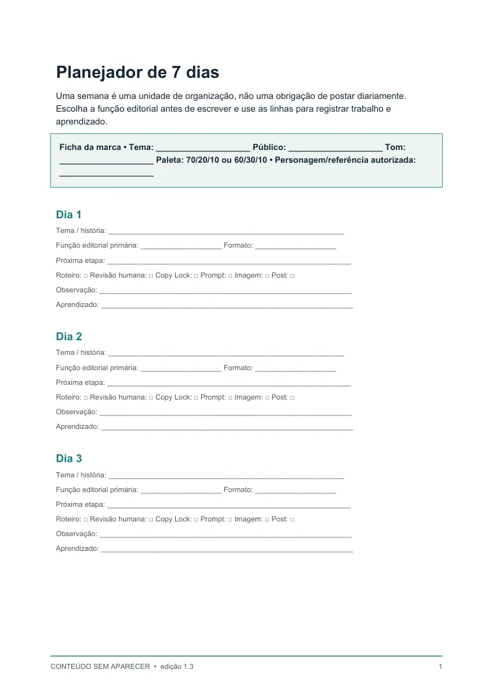
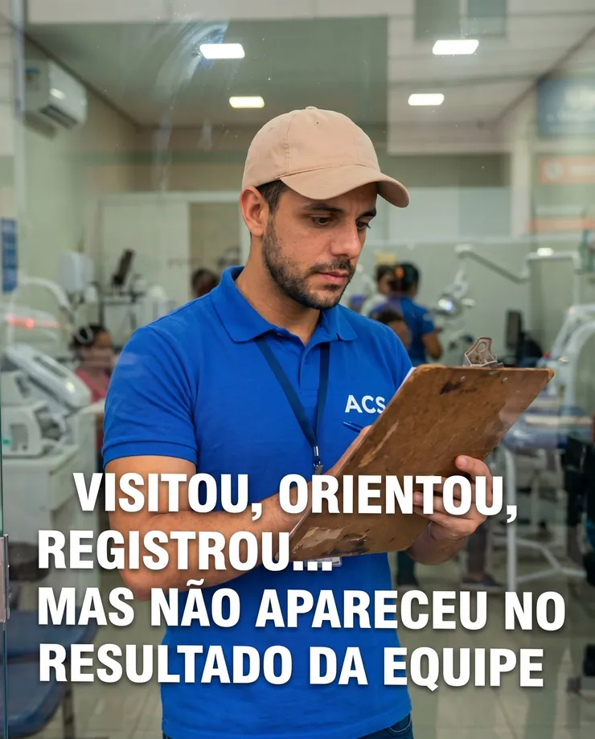

Escolha seu assunto
Pense em um tema que conhece e defina as cores e o estilo que vai repetir.
GUIA PRÁTICO · LEO / ROTINA ACS
Meu processo no Rotina ACS para criar carrosséis com IA, mantendo seu jeito de escrever e uma identidade visual que as pessoas reconhecem.
Você não precisa saber tudo sobre Instagram para começar. Precisa de um assunto, uma sequência clara e um primeiro post bem feito.
Veja os 6 passos01 / O MÉTODO
Eu sou Leo, criador do Rotina ACS. Foi assim que organizei meu jeito de trabalhar: a IA ajuda a montar, mas eu decido o que quero dizer.
Pense em um tema que conhece e defina as cores e o estilo que vai repetir.
Uma dúvida, uma experiência ou algo útil que você consiga explicar com verdade.
Use o ChatGPT para organizar a ideia em frases curtas, uma por slide.
Tire exageros, confira os fatos e aprove a versão que parece sua.
Com Gemini e Flow: só texto ou com personagem, se preferir.
Revise texto, cores, rosto quando houver, e legibilidade no celular.
02 / O QUE VOCÊ RECEBE
Tudo digital. Material direto, para ler e aplicar no seu próprio ritmo.

Do primeiro carrossel à identidade visual, com termos explicados de maneira simples, estudo de artes reais e exercício guiado.
PDF COM NAVEGAÇÃO
Pedidos prontos para copiar, preencher e adaptar. Inclui exemplo preenchido e versões PDF e Markdown.
PDF + TEXTO COPIÁVEL
Organize assuntos, formatos e etapas de produção sem depender de publicar todos os dias.
PDF PARA PREENCHER*As imagens acima mostram páginas reais dos materiais. Não há aulas em vídeo neste produto.
03 / COMO ISSO FICA NA PRÁTICA
Estas são seis artes reais do Rotina ACS. Repare nas cores, na roupa e na linguagem visual. As cenas mudam, mas o conjunto continua reconhecível.

As artes são exemplos para estudo visual. Os prompts originais dessas seis imagens não fazem parte do material e a identidade do Rotina ACS não é cedida para reutilização.
04 / IA COM CRITÉRIO
Eu uso o ChatGPT para estruturar roteiros; na etapa visual, priorizo o Gemini pela consistência do personagem que observei nos meus testes e uso o Flow para gerar as imagens.
Antes de publicar, leio tudo outra vez. Se uma frase não parece algo que eu escreveria, eu mudo.
O QUE VOCÊ APRENDE A CONTROLAR
05 / PARA QUEM É
Não é um curso em vídeo, não ensina cada botão de todas as ferramentas e não oferece resultado garantido de seguidores ou vendas.
SEU PRIMEIRO PASSO
Da sua ideia a um carrossel pronto para publicar: roteiro revisado, identidade visual própria e um processo que você pode repetir.
O produto está cadastrado. O botão de compra será ativado depois que a Hotmart liberar o checkout.
06 / DÚVIDAS FREQUENTES
O essencial sobre o material e o que você precisa para colocar o método em prática.
Não. Você pode criar carrosséis só com texto, objetos ou cenários. Se quiser um personagem fixo, o guia explica como trabalhar com referência de imagem.
Sim, o material começa por seis passos simples para fazer um carrossel de cinco slides. Os termos técnicos são explicados dentro do guia.
Não. É um conjunto de arquivos digitais: guia PDF, banco de 12 prompts em PDF e Markdown e planejador em PDF.
As ferramentas podem ter recursos e limites diferentes conforme o plano. O guia apresenta o processo, mas você deve conferir as condições atuais do ChatGPT, Gemini e Google Flow antes de produzir.
Não existe garantia de seguidores, alcance, viralização ou vendas. Eu compartilho um processo que utilizo e critérios para testar, acompanhar e melhorar seu próprio conteúdo.
Após a confirmação do pagamento, a Hotmart fornece as orientações para acessar os arquivos digitais do produto.